Tune model hyperparameters
Source:vignettes/articles/tune-hyperparameters.Rmd
tune-hyperparameters.RmdIntro
In the previous articles you have learned the core functions of SDMtune and how to perform data-driven variable selection. In this article you will learn how to tune the model hyperparameters.
Training, validation and testing split
When you tune the model hyperparameters you iteratively adjust the
hyperparameters while monitoring the changes in the evaluation metric
computed using the testing dataset. In this process, the information
contained in the testing dataset leaks in the model and therefore, at
the end of the process, the testing dataset doesn’t represent anymore an
independent set to evaluate the model Chollet and
Allaire (2018). A better strategy, than splitting the observation
locations in training and testing, would be to split them into training,
validation and testing datasets. The training dataset is then used to
train the model, the validation datasets to drive the hyperparameter
tuning and the testing dataset to evaluate the tuned model. The function
trainValTest() allows to split the data in three folds
containing the provided percentage of data. For illustration purpose
let’s split the presence locations in training (60%), validation (20%)
and testing (20%) datasets:
library(zeallot) # For unpacking assignment
c(train, val, test) %<-% trainValTest(data,
val = 0.2,
test = 0.2,
only_presence = TRUE,
seed = 61516)
cat("# Training : ", nrow(train@data))
#> # Training : 5240
cat("# Validation: ", nrow(val@data))
#> # Validation: 5080
cat("# Testing : ", nrow(test@data))
#> # Testing : 5080We now train a Maxnet model with default settings and using the training dataset:
model <- train("Maxnet",
data = train)Another approach would be to split the data in two folds: training and testing, use the cross validation strategy with the training dataset to tune the model hyperparameters, and evaluate the tuned model with the unseen held apart testing dataset. For execution time reason we demonstrate the first approach but you are free to try out the second one.
Check the effect of varying one hyperparameter
To see the effect of varying one hyperparameter on the model
performance we can use the function gridSearch(). The
function iterates through a set of predefined hyperparameter values,
train the model and displays in real-time the evaluation metric in the
RStudio viewer pane (hover over the points to get a tooltip with extra
information). Let’s see how the AUC changes varying the regularization
multiplier. First we have to define the values for the hyperparameter
that we want to test. For that we create a named list that we will use
as an argument for the function gridSearch():
# Define the values for the regularization multiplier
h <- list(reg = seq(0.2, 1, 0.1))
# Call the gridSearch function
exp_1 <- gridSearch(model,
hypers = h,
metric = "auc",
test = val)As you noticed we used the validation dataset as test argument. The
output of the function is an object of class SDMtune().
Let’s print it:
exp_1
#>
#> ── Object of class: <SDMtune> ──
#>
#> Method: Maxnet
#>
#> ── Tested hyperparameters
#> • fc: "lqph"
#> • reg: 0.2, 0.3, 0.4, 0.5, 0.6, 0.7, 0.8, 0.9, and 1When you print the output, the text contains the models configuration
that have been used during the execution of the function. In our case,
only the regularization multiplier reg has multiple values.
You can plot the SDMtune() object:
plot(exp_1,
title = "Experiment 1")
and you can also recreate the interactive chart using:
plot(exp_1,
title = "Experiment 1",
interactive = TRUE)The SDMtune() object stores the results in the slot
@results:
exp_1@results| fc | reg | train_AUC | test_AUC | diff_AUC |
|---|---|---|---|---|
| lqph | 0.2 | 0.9008033 | 0.8235925 | 0.0772108 |
| lqph | 0.3 | 0.8988542 | 0.8268050 | 0.0720492 |
| lqph | 0.4 | 0.8972125 | 0.8300300 | 0.0671825 |
| lqph | 0.5 | 0.8953675 | 0.8325025 | 0.0628650 |
| lqph | 0.6 | 0.8936800 | 0.8350225 | 0.0586575 |
| lqph | 0.7 | 0.8918142 | 0.8370500 | 0.0547642 |
| lqph | 0.8 | 0.8897492 | 0.8388800 | 0.0508692 |
| lqph | 0.9 | 0.8883683 | 0.8389875 | 0.0493808 |
| lqph | 1.0 | 0.8875433 | 0.8395025 | 0.0480408 |
You can order them with:
exp_1@results[order(-exp_1@results$test_AUC), ]| fc | reg | train_AUC | test_AUC | diff_AUC | |
|---|---|---|---|---|---|
| 9 | lqph | 1.0 | 0.8875433 | 0.8395025 | 0.0480408 |
| 8 | lqph | 0.9 | 0.8883683 | 0.8389875 | 0.0493808 |
| 7 | lqph | 0.8 | 0.8897492 | 0.8388800 | 0.0508692 |
| 6 | lqph | 0.7 | 0.8918142 | 0.8370500 | 0.0547642 |
| 5 | lqph | 0.6 | 0.8936800 | 0.8350225 | 0.0586575 |
| 4 | lqph | 0.5 | 0.8953675 | 0.8325025 | 0.0628650 |
| 3 | lqph | 0.4 | 0.8972125 | 0.8300300 | 0.0671825 |
| 2 | lqph | 0.3 | 0.8988542 | 0.8268050 | 0.0720492 |
| 1 | lqph | 0.2 | 0.9008033 | 0.8235925 | 0.0772108 |
Try yourself
Try to see how TSS changes varying the regularization multiplier from 1 to 4 (highlight to see the solution):
# Define the values for reg
h <- list(reg = 1:4)
# Call the gridSearch function
exp_2 <- gridSearch(model,
hypers = h,
metric = "tss",
test = val)and how AUC changes varying the feature combinations using the following values: l, lq, lh, lqp, lqph and lqpht (highlight to see the solution):
# Define the values for fc
h <- list(fc = c("l", "lq", "lh", "lqp", "lqph", "lqpht"))
# Call the gridSearch function
exp_3 <- gridSearch(model,
hypers = h,
metric = "auc",
test = val)Train a Maxent model and see how the AUC changes varying the number of iterations from 300 to 1100 with increments of 200 (highlight to see the solution):
maxent_model <- train("Maxent",
data = data)
# Define the values for fc
h <- list("iter" = seq(300, 1100, 200))
# Call the gridSearch function
exp_4 <- gridSearch(maxent_model,
hypers = h,
metric = "auc",
test = val)To see which hyperparameters can be tuned in a given model use the
function getTunableArgs(). For example:
getTunableArgs(model)
#> [1] "fc" "reg"Tune hyperparameters
To tune the model hyperparameters you should run all the possible combinations of hyperparameters. Here is an example using combinations of regularization multiplier and feature classes:
h <- list(reg = seq(0.2, 2, 0.2),
fc = c("l", "lq", "lh", "lqp", "lqph", "lqpht"))
exp_5 <- gridSearch(model,
hypers = h,
metric = "auc",
test = val)This code takes already quite long as it has to train 60 models.
Imagine if you want to check more values for the regularization
multiplier and maybe add the number of iterations (in the case of a
Maxent model). The number of models to be trained
increases exponentially and consequently the execution time. In the next
two paragraphs we will present two possible alternative to the
gridSearch() function.
Random search
The function randomSearch() trains models taking a
random sample of the predefined configurations. In the next example we
select 10 random configurations:
h <- list(reg = seq(0.2, 5, 0.2),
fc = c("l", "lq", "lh", "lp", "lqp", "lqph"))
exp_6 <- randomSearch(model,
hypers = h,
metric = "auc",
test = val,
pop = 10,
seed = 65466)The real-time chart plots two different graphs, one with the chosen
metric for each trained model and one with the evaluation metric for the
starting and the best found model. As you can see, the function is able
to find a better combination of the model hyperparameters compared to
the starting model; and this training only 10 instead of 150 models. The
results includes the 10 trained model. If you are not happy with the
solution, you can check the best hyperparameter combinations and this
gives you an intuition of which ones are the hyperparameters to “refine”
using the function gridSearch(). The SDMtune()
object stores the results in a data.frame than can be
accessed with the following command:
exp_6@results| fc | reg | train_AUC | test_AUC | diff_AUC |
|---|---|---|---|---|
| lp | 2.2 | 0.8691417 | 0.8482400 | 0.0209017 |
| lp | 0.8 | 0.8734875 | 0.8472100 | 0.0262775 |
| lqph | 3.2 | 0.8713750 | 0.8435500 | 0.0278250 |
| lqph | 2.4 | 0.8764117 | 0.8435025 | 0.0329092 |
| lq | 3.8 | 0.8597967 | 0.8419325 | 0.0178642 |
| lh | 3.2 | 0.8698442 | 0.8414150 | 0.0284292 |
| lqph | 1.2 | 0.8854808 | 0.8408300 | 0.0446508 |
| lh | 2.0 | 0.8751675 | 0.8399250 | 0.0352425 |
| lh | 1.0 | 0.8860650 | 0.8391100 | 0.0469550 |
| l | 0.4 | 0.8489625 | 0.8269575 | 0.0220050 |
Optimize Model
The previous function doesn’t learn anything from the trained models,
it just selects n random combinations of hyperparameters. The function
optimizeModel() uses a genetic algorithm to find
an optimum or near optimum solution. Check the function documentation to
understand how it works, here we provide the code to execute it:
exp_7 <- optimizeModel(model,
hypers = h,
metric = "auc",
test = val,
pop = 15,
gen = 2,
seed = 798)Evaluate final model
Let’s say we want to use the best tuned model found by the
randomSearch() function. Before evaluating the model using
the testing dataset, we can merge the training and the validation
datasets together to increase the number of locations and train a new
model with the merged observations and the tuned configuration. At this
point we may have removed variables using the varSel() or
reduceVar() function. If this is the case, we cannot merge
directly the initial datasets which contain all the environmental
variables. We can extract the train dataset with the selected variables
from the output of the experiment and merge it with the validation
dataset using the function mergeSWD():
# Index of the best model in the experiment
index <- which.max(exp_6@results$test_AUC)
# New train dataset containing only the selected variables
new_train <- exp_6@models[[index]]@data
# Merge only presence data
merged_data <- mergeSWD(new_train,
val,
only_presence = TRUE) The val dataset contains all the initial environmental
variables but the mergeSWD() function will merge only those
that are present in both datasets (in case you have performed variable
selection).
Then we get the model configuration from the experiment 6:
head(exp_6@results)| fc | reg | train_AUC | test_AUC | diff_AUC |
|---|---|---|---|---|
| lp | 2.2 | 0.8691417 | 0.8482400 | 0.0209017 |
| lp | 0.8 | 0.8734875 | 0.8472100 | 0.0262775 |
| lqph | 3.2 | 0.8713750 | 0.8435500 | 0.0278250 |
| lqph | 2.4 | 0.8764117 | 0.8435025 | 0.0329092 |
| lq | 3.8 | 0.8597967 | 0.8419325 | 0.0178642 |
| lh | 3.2 | 0.8698442 | 0.8414150 | 0.0284292 |
The best model is at row 1 and was trained using lp feature class combination and 2.2 as regularization multiplier:
final_model <- train("Maxnet",
data = merged_data,
fc = exp_6@results[index, 1],
reg = exp_6@results[index, 2])Now we can evaluate the final model using the held apart testing dataset:
auc(final_model,
test = test)
#> [1] 0.8325913Hyperparameters tuning with cross validation
Another approach would be to split the data in two folds: training and testing, use the cross validation strategy with the training dataset to tune the model hyperparameters, and evaluate the tuned model with the unseen held apart testing dataset.
# Create the folds from the training dataset
folds <- randomFolds(train,
k = 4,
only_presence = TRUE,
seed = 25)
# Train the model
cv_model <- train("Maxent",
data = train,
folds = folds)All the previous examples can be applied to the cross validation,
here an example with randomSearch (note that in this case
the testing dataset is not provided as is taken from the folds stored in
the SDMmodelCV):
h <- list(reg = seq(0.2, 5, 0.2),
fc = c("l", "lq", "lh", "lp", "lqp", "lqph"))
exp_8 <- randomSearch(cv_model,
hypers = h,
metric = "auc",
pop = 10,
seed = 65466)The function randomSearch orders the models according to
the best value of the metric for the testing dataset. In this case we
can train a model using the best configuration of the hyperparameters
and without cross validation (i.e. using all presence and background
locations) with:
Conclusion
In this article you have learned:
- the training/validation/testing evaluation strategy;
- how to explore the effect of changing one model hyperparameter at time;
- how to tune the model hyperparameters using three different functions;
- how to merge two
SWD()objects; - how to evaluate a final model using the held apart testing dataset.